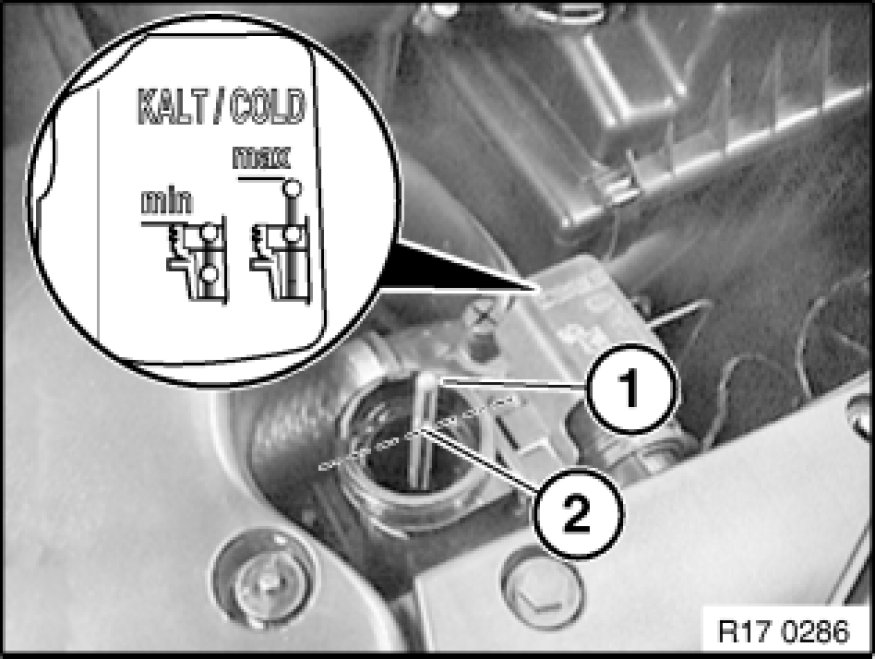
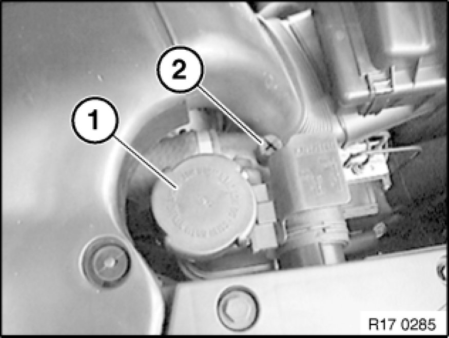

17 00 039 Venting Cooling System and Checking For Leaks
17 00 039 - Venting cooling system and checking for leaks (N52)

Warning!
Danger of scalding!
Open sealing cap only after engine has cooled down.
Wear protective gloves and goggles.

Important!
Follow instructions for working on cooling system.
Electric coolant pump!
Observe special venting procedure after replacing engine or heating cooler.

Only when refilling!
Use only recommended coolant Component Tests and General Diagnostics.
Observe mixture ratio.
Perform filling operation slowly.
Adjust coolant level to MAX.
Maximum cold fill level:
- Top edge of coolant expansion tank is level with marking (2).
Important!
The following venting procedure is necessary e.g. when a part is replaced in the cooling system or when the cooling system is refilled.

Only when venting!
Open cap (1) on coolant expansion tank.
Open vent screw (2).
Important!
Fill coolant expansion tank up to lower edge of filler neck with recommended coolant.
Pour in coolant slowly.
Close vent screw (2) when bubble-free coolant emerges
Close cap on expansion tank.
Do not open the coolant expansion tank cap during the venting procedure.
1. Connect battery charger.
2. Switch on ignition.
3. Set heater to maximum temperature, activate "Automatic" button, then reduce fan to lowest setting.
4. Press accelerator pedal for 10 seconds to floor. Engine must not be started.
5. The venting procedure is started when the accelerator pedal is pressed and takes approx. 12 minutes.
6. Check cooling system for leaks.
7. If the venting procedure has to be carried out several times, allow DME to drop completely (ignition key removed for approx. 3 minutes), then repeat from Point 3.
Checking coolant level:
Important!
Check coolant level at a maximum coolant temperature of 30 °C.
If ambient temperature is above 30 °C, allow engine to cool down at least to ambient temperature.
Open cap carefully.
Fluid level is OK when top edge of coolant expansion tank lies between both markings (1 and 2) on float needle.
Minimum cold fill level:
- Top edge of coolant expansion tank is level with marking (1).
Maximum cold fill level:
- Top edge of coolant expansion tank is level with marking (2).
If necessary, top up coolant.
Close cap on expansion tank.
Important!
Observe the following special venting procedure after replacing the engine or heating cooler.
Venting cooling system:
Open cap (1) on coolant expansion tank.
Open vent screw (2).
Important!
Fill coolant expansion tank up to lower edge of filler neck with recommended coolant.
Pour in coolant slowly.
Close vent screw (2) when bubble-free coolant emerges
1. Connect battery charger.
2. Switch on ignition.Engine must not be started!
3. Connect DIS Tester.
4. Cover expansion tank opening with a suitable fluff-free cloth.
This prevents the engine compartment from being fouled by coolant splashes and contaminants from entering the cooling system.
5. Activate electric coolant pump at 95% by means of DIS Tester.
- DME brief test
- Control unit functions
- Component activation
- Coolant pump 95%
The coolant pump is activated by the DIS Tester and switches off automatically.
6. Pour coolant into expansion tank up to max. cold fill level.
7. Repeat steps 4 to 6 until the coolant level in the expansion tank when compared with the last replenishment level (max. cold fill level) no longer drops when the electric coolant pump is activated.
8. Close cap on expansion tank.
Note:
Check cooling system for leaks Component Tests and General Diagnostics.
Checking coolant level:
Important!
Check coolant level at a maximum coolant temperature of 30° C.
If ambient temperature is above 30° C, allow engine to cool down at least to ambient temperature.
Open cap carefully.
The fluid level is OK when the top edge of the coolant expansion tank lies between the two markings (1 and 2).
Minimum cold fill level:
- Top edge of coolant expansion tank is level with marking (1).
Maximum cold fill level:
- Top edge of coolant expansion tank is level with marking (2).
If necessary, top up coolant.
Close cap on expansion tank.